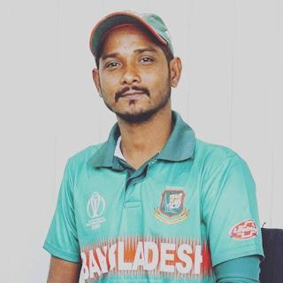
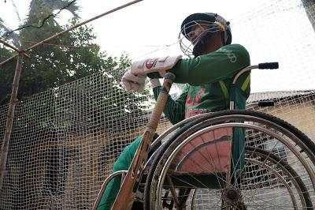
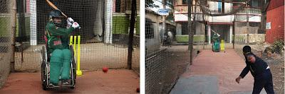
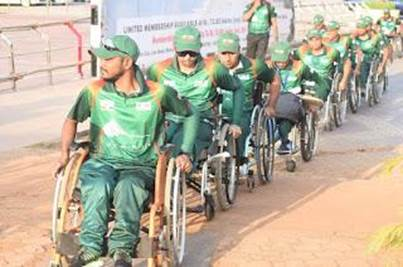
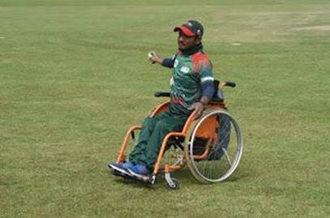
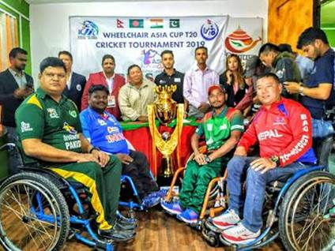
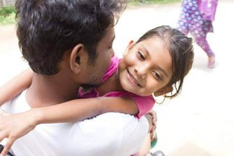

Project information
Project 4
Course Code and Name: MSJ11203 Communication and Technology
Project Name: Blog & Digital Story
Date of Project: Summer 2019
Project Description:
In this project, I was assigned to write a blog and a digital story based on the same story. The blog was an individual work but the video we made it was in a group. In this project I choose Blogspot to publish my writeup. Before this project, I do not have any experience in writing blogs and making digital stories. We were allowed to pick any topic to write a blog and make video. So, we decided do this project on Bangladesh’s wheelchair cricket teams captain ‘Mohammad Mohasin’. Where we showed how he is coping up with the challenging world and living his dreams.
Project
Justification:
By this project I wanted to showcase the courage,
effort and determination of a differently able person like Mohosin. All his
struggle and success showed that people can achieve their dreams by their
works. People in Bangladesh have very conservative mind that they think people
with disability can’t do anything and they need to relay on others. Through
this project I wanted to prove them wrong and make them realize that they are
not disable, but they are differently able. I choose this topic because I found
it very motivational and while doing this project I felt very positive from
inside because through this project I will be able to spread positivity and
able break the norms against the differently able person in our society.
Communication and Technology
Assignment
On
Blog writing
Submitted to :
Muhammad
Aminuzzaman
Senior Lecturer
School of Social Science (SSS)
Submitted by :
|
NAME |
ID |
|
Md. Eanur Hossain |
162012007 |
|
Samiul islam |
173012001 |
|
Sumaiya Sultana |
173012025 |
|
Tamanna Akter |
181012075 |
Submitted Date: 18.07.2019
“Mohammad Mohasin” another name of inspiration
|
 |
|
Mohammad Mohasin |
“Mohammad Mohasin” is another name of inspiration. Inspiration
to all of us, especially for the differently able people like him.
He is by birth disable. He uses wheelchair to move from one place to another.
In our society where we see disable people as a value less people, here he
prove us wrong and create his own status and position in the world. By his
endless effort he becomes the caption of Bangladesh wheelchair cricket team.
And now he is one of the most valuable person In the international arena.
In the beginning it wasn’t easy for him to survive but because of his
dedication and love of cricket help him to come to this stage. He formed the
Bangladesh wheelchair cricket team and Bangladesh played more than 15
international matches under his lead and brings many satisfactory victories.
Now in our 6 divisions we have 6 wheelchair cricket team, where almost 250
disable players are able to play. Now Mohasin is planning to organize premier
league with them.
Mohasin achieve “Joy Bangla Youth Award” for his great
inspirational work in 2017. Now he has become the real hero of our nation.
|
 |
|
|
|
 |
|
Mohammad Mohasin at his
practice ground
|
Before starting his career as a cricketer, Mohasin was a shopkeeper as he was unable to do other works. All his income source was his shop and he wasn't satisfy with his life. As he is passionate and high ambitious, he was dreaming about to do something great in his life. It was around in 2008 when he first take the initiative to started his career as a cricketer.

|

|
|
Playing an international match (Photo Collected) |
In 2010 Mohasin formed a team "Wheelchair cricketer" and started to work with the disable people who have the potential to prove their talents and to incorporate the persons with disabilities & to strengthen in mainstream society. In 2016, the organization registered under the Social Welfare Department of Bangladesh. Before their registration they participated in many tournaments like ICRC International cricket tournament in Bangladesh and Asia Cup in India.
|
 |
|
Asia Cup T20 (Photo Collected) |
Mohasin not only prove himself as a potential person in the society but also inspire all the people like him. Now Mohasin is happy and able to lead a normal life like others, in his personal life Mohasin is living with his family. In his family he has his father, mother, wife and his 4 years old child. Before his success all the people thought that he and people like him is a burden for our society. He changed our perception and showed us that they can also the same thing like us but in a different way. That’s we should call them differently able people, not disable people.
|
 |
|
Mohasin with his child |
|
Posted by SAmiul islam at 3:32 PM
|
Digital Story link: https://www.facebook.com/watch/?v=2690037857686637
Learnings and outcomes (Self-reflection):
This course was one of enjoyable course for me because I learned so many new things by which I can use my communication skills through technology. Here I learned
● What is blog and how to make it.
● Different kinds of blog sites.
● Learned how to write an audience engaging blog post.
● Learned to do how to use/modify the blog site.
● And also learned how to work in a group and individually.
● How make a digital story.